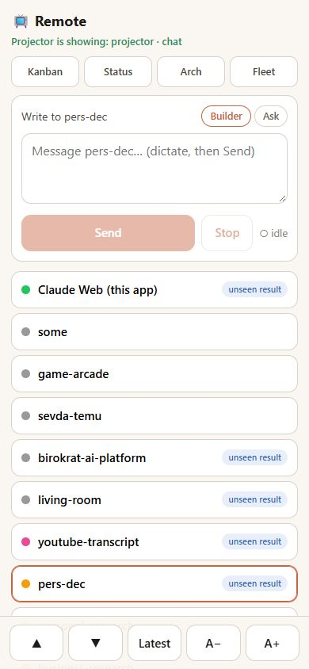
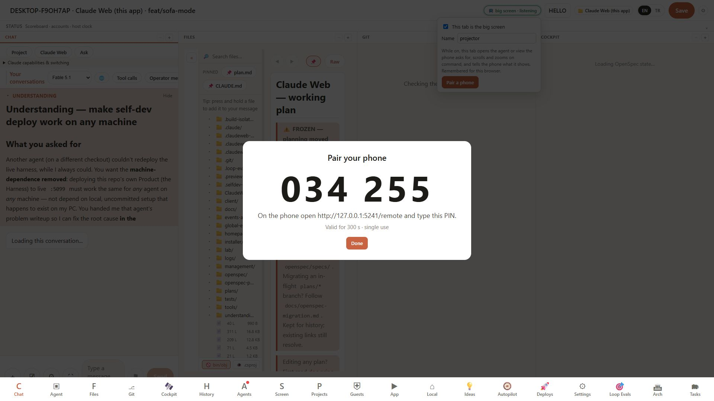
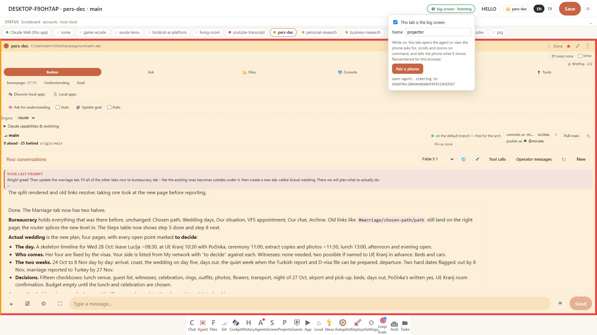

Fleet task 68090860 · openspec sofa-mode (APPROVED 2026-10-08 — the harness leg is BUILT and verified end to end; the living-room leg is dispatched). The living-room PC drives the projector and runs this harness; today the Operator sits at it with keyboard and mouse. The wish: lie on the sofa, hold the phone, look at the projector. Two things already exist — the daljinski phone remote (mouse + text into the PC, YouTube on the projector) and the harness, which the phone can already open on the LAN. What is missing is the link: nothing can tell the harness tab on the projector what to open, and nothing on the phone shows the harness thumb-sized. Revised on the Operator's steer: no new projector view — Chrome keeps showing the real harness (Kanban, Agent tab, Arch), and the phone sends that tab commands. Walk the tabs left to right.
Facts from a read-only look at both repos (2026-10-08). daljinski: LivingRoom.App .NET 10 WinForms + Kestrel, http://0.0.0.0:5077, no auth, POST /commands {type,args}, polls /state every 1.5 s, phone page src\LivingRoom.Daljinski\wwwroot\app.js. Harness: POST /api/chat + SSE, GET /api/dock server-side, the active tab client-only, IP gate with the LAN bypass range, password session for /api.
Three screenshots from the automated session (client/tests/ui/e2e-sofa-remote.mjs, 23 checks green): the phone remote after pairing with pers-dec opened and its composer in reach; the PIN the big screen shows when the Operator chooses "Pair a phone"; the projector tab after the phone's tap — the real Agent tab with pers-dec's dock, the pill's menu still open with the outcome line "open-agent: steering to …". No prompt was sent (that would run an agent); the composer, Stop, peek and the question buttons are exercised by the unit tests and the real session on the projector after the deploy.



Right: real screenshots of this harness as Chrome shows it on the projector (taken 2026-10-08 at 1920×1080 from an isolated copy of the deployed build loaded with this machine's dock and board data) — the Management Kanban, pers-dec's dock in the Agent tab, the Arch conversation. The only thing drawn on top is the one element the plan adds: the header pill "📺 big screen · listening", plus a callout saying where each command lands. Left: the phone remote (a mock — it does not exist yet). Tapping an agent on the phone does exactly what clicking a repo agent's chip on the Kanban does today (openAgentHarness) — only the click comes over the wire.
— the phone types and points, the harness tab on the projector obeys and shows; a command channel joins them.
The harness owns the command channel, the listening tab and the phone remote — and renders nothing new: the Agent tab, the Kanban and the Arch tab are the big screen. Its trust model stays, and the remote works for any harness in the fleet with no living-room app at all. daljinski owns what only it can do on this PC: inject input, scroll, press keys, raise the right window — and give the phone one page with a Harness tab next to YouTube and the touchpad. The living-room branch feature/daljinski-text-send has a lot of uncommitted work (admin app, Haydar agent, playlists); the leg here is a separate small branch that does not touch it.
Decided (Operator, 2026-10-08): D-C. D-A is not a candidate but the status quo — the Operator already drives the harness from the sofa with daljinski's mouse and keyboard, "better than nothing, but too much work". D-B was this plan's first draft (a dedicated projector view) and is dropped: the real harness is already on the projector and is the view wanted. D-C — command that real tab from a phone remote — "is the correct way to frame it".
The Operator's first thought was an embedded browser inside the living-room projector window. Below are seven ways to host the big screen, rated ★ out of 5 on eight dimensions — 5 is always the better end (for effort, 5 = least work). A ninth, "reuse across the fleet", was dropped as a non-factor on 2026-10-08: the living-room app is simply installed wherever sofa mode is wanted. Click a column header to sort by it; hover a cell for the reason behind the stars; click an option card for how it would be built. Ratings are my estimates from reading both codebases on 2026-10-08, not measurements.
· untick for equal weights: H3 still leads (32 of 40), H4 next (31), then H1, H2, H6 (29)
Approved by the Operator on 2026-10-08 with all seven questions answered (tab 7). The driver (this agent) builds the harness side and drives living room/living-room for its side; each leg is recorded with report_leg; the card is done when both PRs are merged.